Profilul de sănătate al comunității
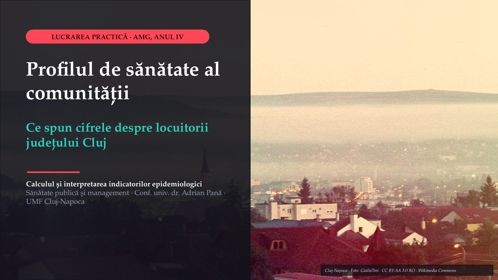
1 / 20Ce ar trebui să știe o echipă de îngrijire despre locuitorii unui județ înainte de a organiza un serviciu de îngrijire la domiciliu sau o campanie de vaccinare?
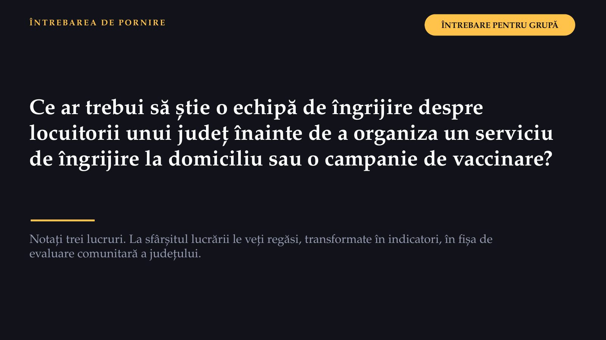
2 / 20La finalul lucrării veți putea
 3 / 20
3 / 20Patru roluri în fiecare echipă
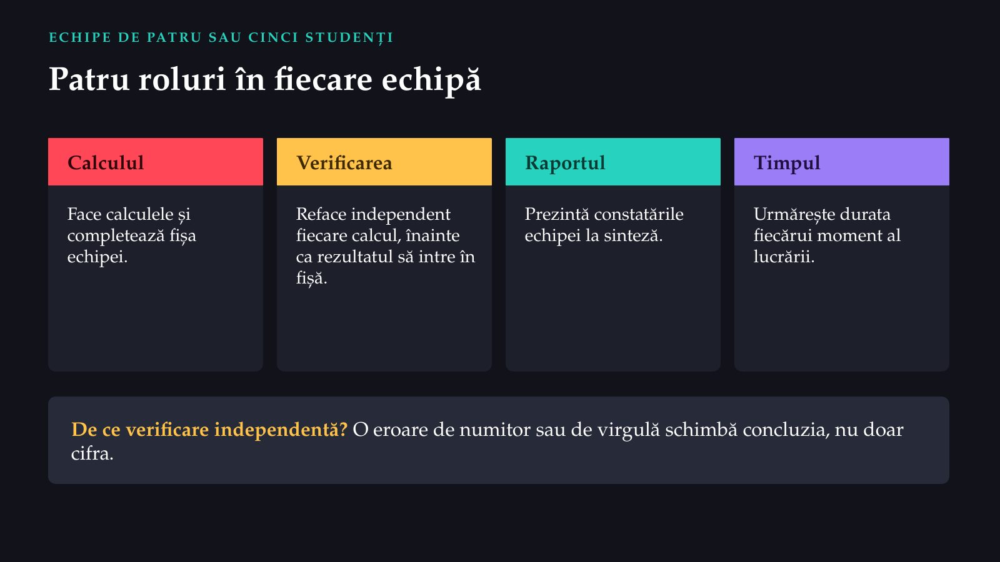
4 / 20Două ore, patru momente
![DESFĂȘURAREA Două ore, patru momente Deschiderea zece minute: obiectivele, datele, echipele Profilul județului Cluj cincizeci de minute: calculul, apoi interpretarea Indicatorii epidemiologici treizeci și cinci de minute: două exerciții de calcul Sinteza și predarea douăzeci și cinci de minute: fișa în Forms, constatările, biletul de ieșire Datele sunt în documentul lucrării și pe diapozitive, deci calculul nu cere internet; conexiunea trebuie numai la predarea fișei în Forms. Fiecare student are un calculator de buzunar sau un laptop cu Excel ori un program echivalent.](diapozitive/LP01/005.jpg) 5 / 20
5 / 20Profilul începe cu evaluarea
![EVALUAREA STĂRII DE SĂNĂTATE Profilul începe cu evaluarea Evaluarea este una dintre cele trei funcții de bază ale sănătății publice, alături de dezvoltarea politicilor și de asigurare: colectarea și analiza regulată a informațiilor despre sănătatea comunității. Profilul comunității pune acești indicatori pe domenii și îi compară cu țara. DE UNDE VIN DATELE Persoanele Mediul Furnizorii de îngrijire CUM SE COLECTEAZĂ Monitorizarea mediului aer, apă, vectori Ancheta un eșantion, informație structurată Notificarea furnizorii raportează cazurile unor boli Registrul evidență permanentă: nașteri, decese, cancer](diapozitive/LP01/006.jpg) 6 / 20
6 / 20Cazurile raportate nu sunt toate îmbolnăvirile
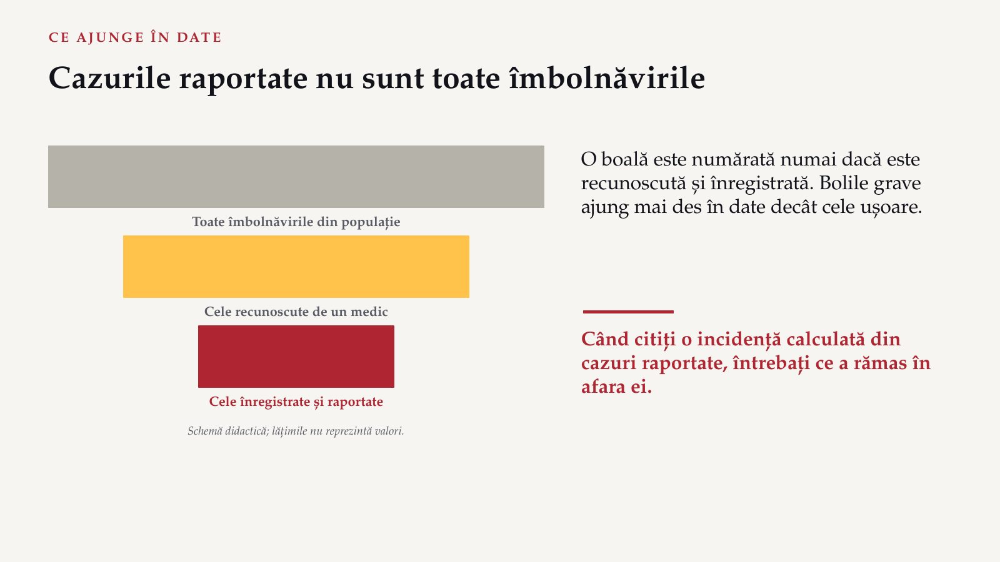
7 / 20699 564
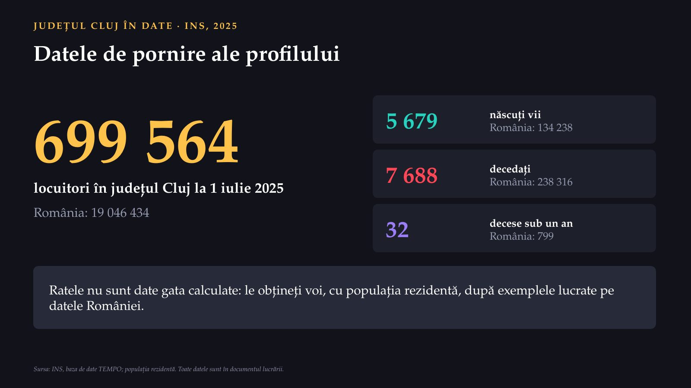
8 / 20Ce intră în fișă: numere absolute
![STRUCTURA PE VÂRSTE ȘI PERSONALUL MEDICAL Ce intră în fișă: numere absolute Populația rezidentă la 1 ianuarie 2026 Grupa Cluj România 0–14 ani 104 093 2 871 139 15–64 de ani 458 507 12 266 941 65 de ani și peste 138 964 3 903 242 Total 701 564 19 041 322 Personalul medical în 2025 Categoria Cluj România Medici 4 454 77 556 Medici de familie 505 13 227 Asistenți, personal mediu 5 002 145 320 Asistenți cu studii superioare 2 406 22 040 Fiecare persoană este numărată o singură dată, la funcția de bază; numărul medicilor include și personalul din învățământul medico-farmaceutic și din cercetare. Asistenții medicali din calcul sunt suma celor două categorii; moașele, înregistrate separat, nu sunt incluse. Sursa: INS, baza de date TEMPO.](diapozitive/LP01/009.jpg) 9 / 20
9 / 20Durata medie a vieții și șomajul înregistrat
![GRAFIC · JUDEȚUL CLUJ FAȚĂ DE ROMÂNIA, 2025 Durata medie a vieții și șomajul înregistrat Durata medie a vieții (ani) Total 77,45 78,71 Mediul urban 78,75 79,82 Mediul rural 75,84 76,83 Județul Cluj România Axa nu începe de la zero. Rata șomajului înregistrat Cluj 1,5% România 3,3% Atenție la comparații. Durata medie a vieții este denumirea INS pentru speranța de viață la naștere; valorile INS (populația după domiciliu) și Eurostat (reședința obișnuită) diferă prin populație și metodă, nu prin definiție, deci nu se compară. Nici șomajul înregistrat nu se compară cu rata șomajului publicată de Eurostat. Sursa: INS, baza de date TEMPO; valorile se trec direct în fișă.](diapozitive/LP01/010.jpg) 10 / 20
10 / 20134 238
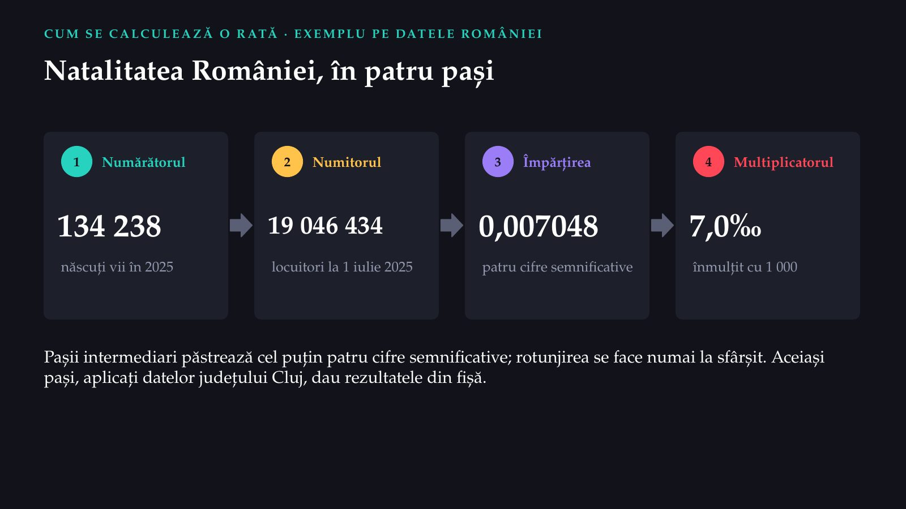
11 / 20Fiecare indicator are numitorul lui
![NUMĂRĂTORUL ȘI NUMITORUL Fiecare indicator are numitorul lui Indicatorul Numărătorul Numitorul La Natalitatea născuții vii din an populația la mijlocul anului 1 000 Mortalitatea generală decedații din an populația la mijlocul anului 1 000 Mortalitatea infantilă decedații sub un an născuții vii din același an 1 000 Dependența vârstnicilor persoanele de 65 de ani și peste persoanele de 15–64 de ani 100 Personalul medical medicii sau asistenții populația 1 000 Sporul natural este natalitatea minus mortalitatea generală. Ponderea unei grupe de vârstă: persoanele din grupă împărțite la populația totală.](diapozitive/LP01/012.jpg) 12 / 20
12 / 20Profilul județului Cluj, pas cu pas
![LUCRU ÎN ECHIPĂ PRIMA SARCINĂ · FIȘA DE EVALUARE COMUNITARĂ Profilul județului Cluj, pas cu pas 1 Verificați metoda pe 2024: INS a publicat 8,1‰, 11,4‰ și −3,3‰. Dacă diferă, căutați eroarea. 2 Ratele anului 2025 și mortalitatea infantilă, comparată cu valoarea publicată de INS. 3 Ponderile grupelor de vârstă și dependența vârstnicilor, la 1 ianuarie 2026. 4 Medici și asistenți la 1 000 de locuitori, locuitori la un medic de familie, asistenți la un medic. 5 Durata vieții și șomajul se preiau direct. Notați: mai mare, mai mic sau apropiat de țară. Datele de verificare, județul Cluj, 2024: populația la 1 iulie, 695 531 de persoane; 5 623 de născuți vii; 7 913 decedați; 484 de medici de familie. INS a publicat 1 437 de locuitori la un medic de familie. Sursa: INS, baza de date TEMPO.](diapozitive/LP01/013.jpg) 13 / 20
13 / 20Trei constatări despre populația județului
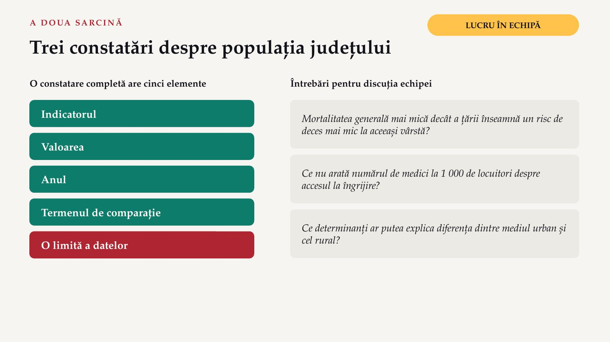
14 / 205,0 ani
 15 / 20
15 / 20Două exerciții în sală, trei în portofoliu
![LUCRU ÎN ECHIPĂ A DOUA PARTE · INDICATORII EPIDEMIOLOGICI Două exerciții în sală, trei în portofoliu Prevalența și incidența într-o listă de pacienți ÎN SALĂ Ratele de mortalitate specifice pe vârste: Cluj față de România ÎN SALĂ Incidența rujeolei și a tusei convulsive, la 100 000 de locuitori PORTOFOLIU Prevalența infecțiilor asociate asistenței medicale PORTOFOLIU Foaia de calcul: incidența în șase localități PORTOFOLIU Portofoliul se rezolvă individual, acasă, și se predă în formularul de portofoliu până la lucrarea practică următoare. Standardizarea directă este pentru aprofundare și nu se evaluează.](diapozitive/LP01/016.jpg) 16 / 20
16 / 20Rujeola în România: cazurile și vaccinarea
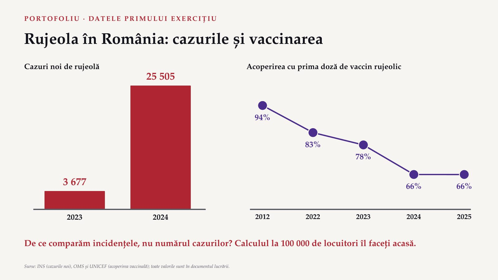
17 / 20Fiecare student predă fișa, individual
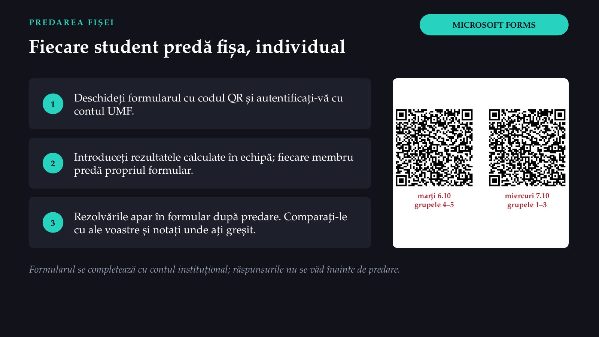
18 / 20Trei principii de interpretare
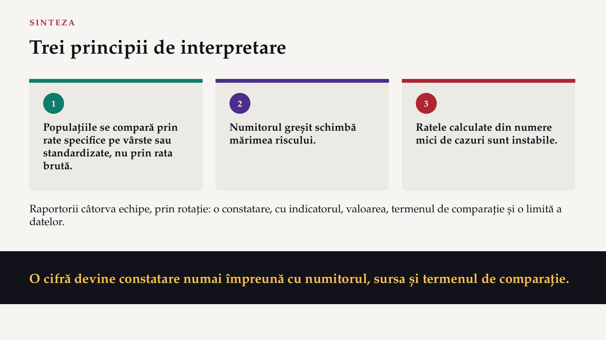
19 / 20Două întrebări pentru final
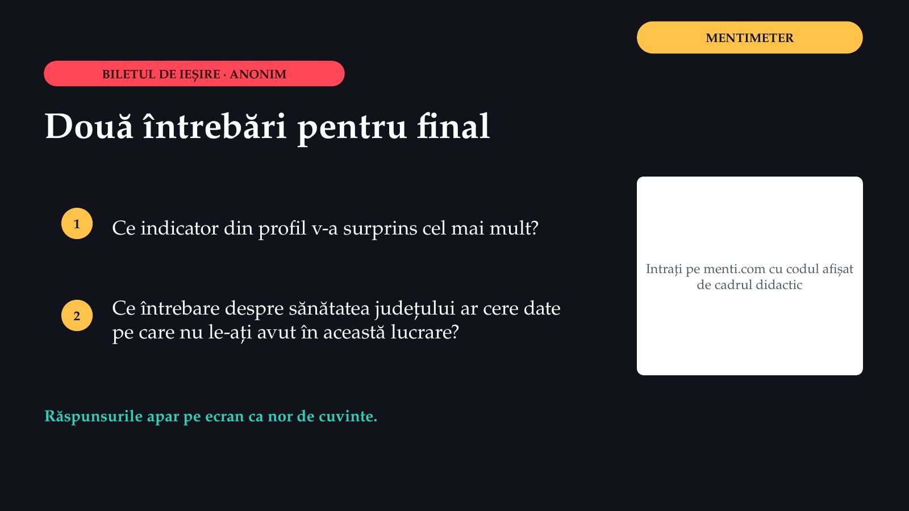
20 / 20Săgeți sau spațiu: navigare · O: vedere de ansamblu · N: notele prezentatorului · F: ecran complet · Esc: închidere